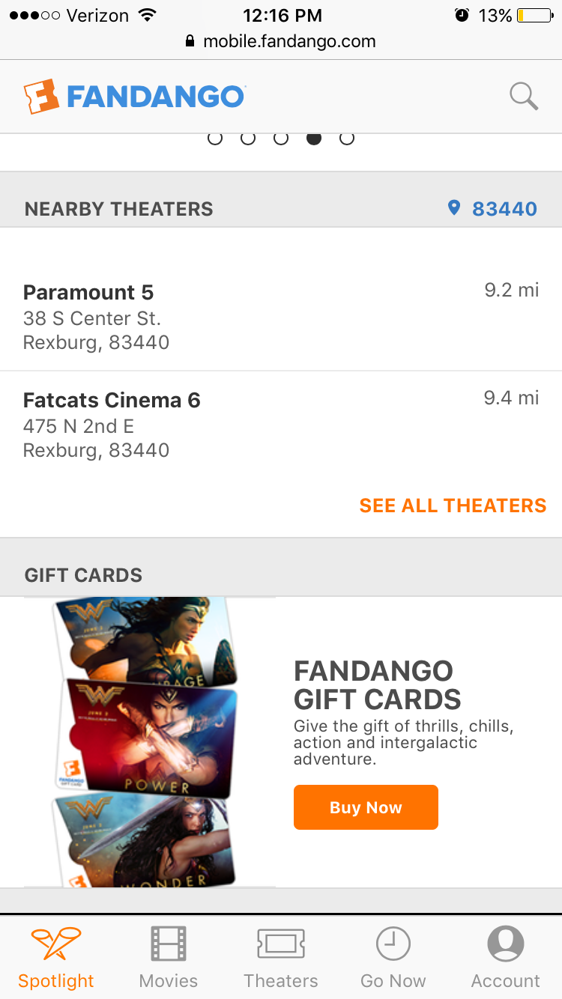

Design - Analysis Assessment
fandango.com
Design Principles
Proximity — Taylor Posivio
Alignment — Ian Cunningham
Repetition — Taylor Posivio
Contrast — Chandler Tew
Here Fandango uses contrast as seen in orange. The logo up at the nav bar is orange, making it stand out. Also, the call to action buttons and links are all in orange, helping the user to identify points of interest. This guides them in making descions faster, because they know where to go and it also helps the owner of the site accomplish his purpose.
Typography — Ryan Call
In this screenshot there are several forms of typography, be it in the size, style, kerning, and tracking of its text. To start off with the title of the movie “Guardians of the galaxy vol. 2,” is in all uppercase and spaced out invoking its importance. It is the first thing you see and your eyes are drawn to it first, then with its alignment to the left side the text continues to pull your eyes down. You see the rating and time in duller and smaller text and the page continues to flow smoothly with a location, times and other location options. Its new sections have bold words to bring your attention to them while not drawing too much focus away from the main title. These are the examples of typography shown in this screenshot
Site Purpose Statement
Target Audience
- Age:
- Occupation:
- Income:
- Other:
Persona
- Name:
- Occupation:
- Primary Device:
- Quote: